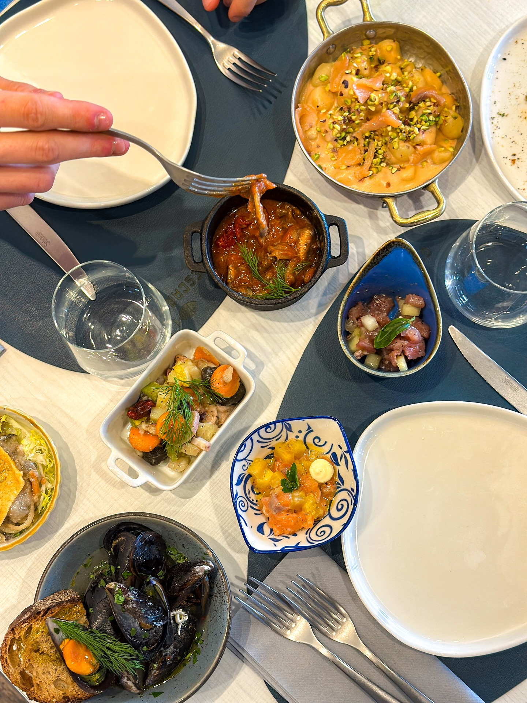
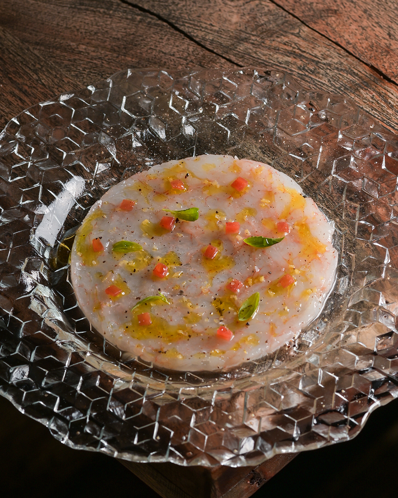
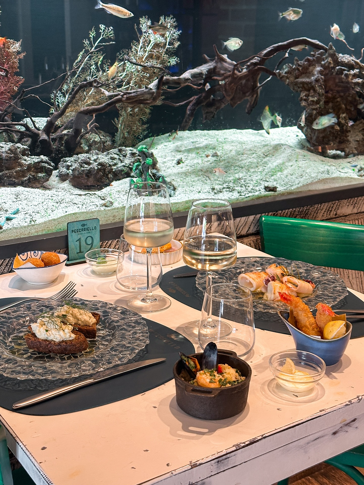
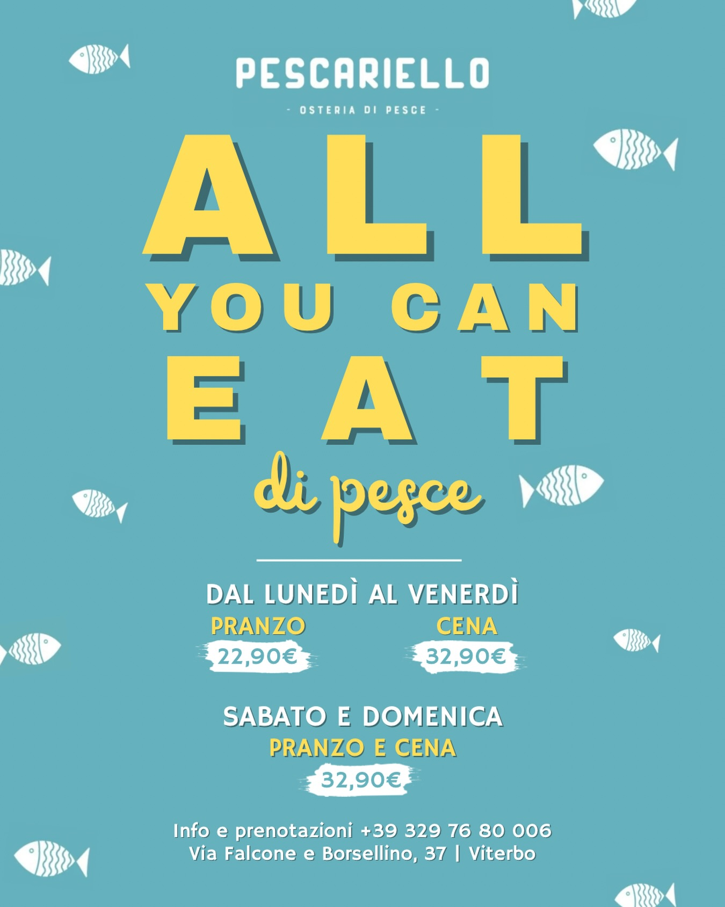

Abbondanza pensata per condividere
Ogni tavolo diventa un percorso di assaggi: crudi, cotti, fritti e specialità che arrivano in sequenza per un'esperienza piena, viva e conviviale.
RISTORANTE DI MARE CONTEMPORANEO
Cucina italiana di pesce, atmosfera viva e tavolate piene. In più, un'esperienza AYCE dedicata con menu separato.
L'Esperienza

Ogni tavolo diventa un percorso di assaggi: crudi, cotti, fritti e specialità che arrivano in sequenza per un'esperienza piena, viva e conviviale.

La cucina valorizza materia prima e stagionalità: sapori netti, equilibrio nei condimenti e una proposta lontana da qualsiasi stile sushi standardizzato.

Luci serali, design moderno e energia social: il contesto perfetto per coppie, gruppi e serate da ricordare, con piatti scenografici pensati anche per i contenuti online.

Esperienza AYCE Dedicata
Qui trovi prima di tutto un ristorante di mare contemporaneo, con cucina italiana e piatti premium alla carta.
In aggiunta, offriamo anche un'esperienza All You Can Eat dedicata, con menu separato pensato per chi vuole vivere il mare senza limiti.
Scopri e PrenotaGallery Immersiva
Piatti scenografici, momenti di condivisione e tutto il mood di una serata Pescariello.
1 / 12
Cinematic Video
Clip brevi in loop per vivere il servizio anche prima di arrivare in sala.
Piatti che arrivano senza sosta, energia alta e tavoli sempre pieni.
Texture, cotture e dettagli che raccontano qualità e freschezza.
Luci morbide, convivialità e scenografia perfetta per la tua serata.
Prenotazione
Trasforma il prossimo dinner plan in una vera esperienza di mare. Scrivici ora su WhatsApp e blocca il tuo posto.
Orari: Mar - Dom 12:30 - 15:00 - 19:30 - 00:00
Social Proof
Un locale vero, pieno, condiviso
Prima ristorante di mare contemporaneo, poi anche esperienza AYCE dedicata: questa è l'identità Pescariello.
Non il solito AYCE: porzioni abbondanti e qualità vera da ristorante di mare.
|Recensioni reali da Instagram, Google e TikTok